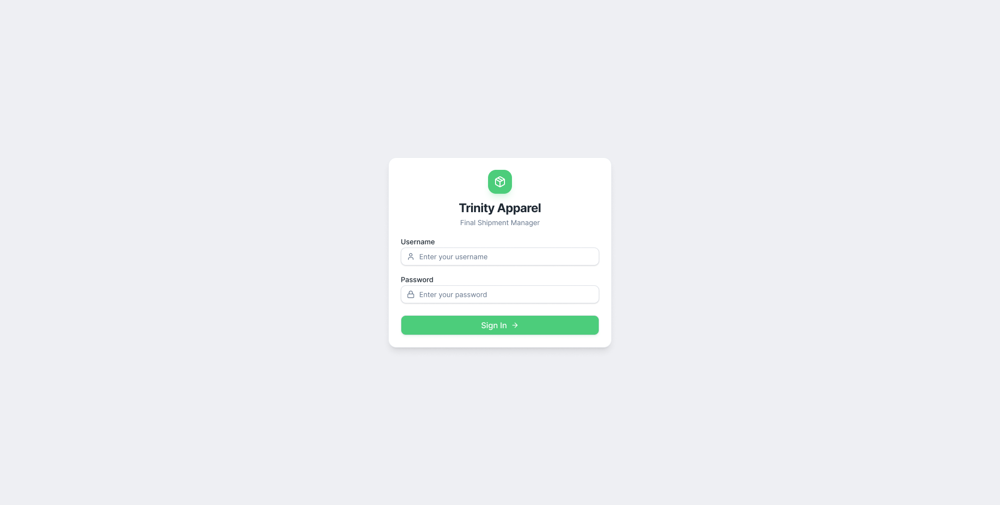
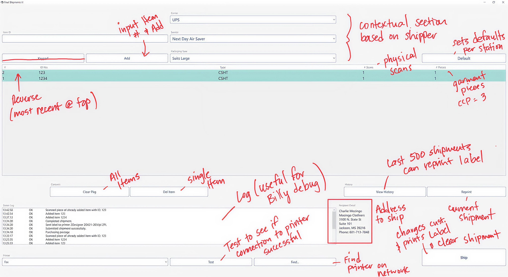

Case study · 01
Final Shipments Manager
Touch-optimized warehouse UI for gloved hands, mounted tablets, and zero tolerance for shipping errors.

The problem
Warehouse workers were shipping hundreds of packages a day using a desktop-oriented interface that had never been designed for gloves, mounted tablets, or a standing workflow. Every tap required precision. Every mistake meant a mislabeled package going out the door.
The existing system buried printer selection four clicks deep, offered no visual confirmation when a scan registered, and gave workers no way to self-diagnose errors — every problem meant calling IT.
Physical constraints
- Workers wear gloves
- Tablets mounted on carts or walls
- Standing, often holding packages
- Variable lighting and glare
Operational constraints
- Hundreds of scans per shift
- Speed is non-negotiable
- Wrong package = real cost
- Multi-device environment
Research
I spent time on-site during peak shipping hours — watching, not just interviewing. The things workers couldn't articulate became obvious in context: the double-tap to confirm a scan they weren't sure had registered, the detour to a desktop to switch printers, the resigned shrug when something went wrong.

Key finding: the workflow itself was sound — pick, scan, print, ship, bin. The interface just didn't match it. Every design decision after that traced back to one question: does this survive a glove and a moving cart?
Key decisions
01
60px minimum touch targets throughout
The primary scan button is 100×100px. Table rows are 80px tall. Every tappable element is oversized on purpose — gloved fingers are imprecise and the cost of a mis-tap in a shipping workflow is high.
02
Printer selector on the main screen, always visible
Workers ship to 4 carriers with different label sizes — switching printers was happening dozens of times per hour. Moving it from a 4-click settings detour to a persistent dropdown on the main view eliminated an entire category of delay.
03
Three input methods, one primary
USB scanner → camera → manual entry, in priority order. The primary path is optimized for speed; the fallbacks ensure the workflow is never blocked by a dead scanner or a damaged barcode.
04
Toggle-able console for transparent error recovery
Workers couldn't see what was happening when things went wrong. A collapsible console — hidden by default, one tap to reveal — shows live API responses, scanner events, and printer status. Controversial with stakeholders initially, it became the most-praised feature in worker feedback.
The interface

"When something goes wrong, I can fix it myself now."
Warehouse worker, post-launch feedback
Interactive prototype
Try the working interface →
Outcomes
The redesign shipped to production. Worker adoption was immediate — no retraining required beyond a 30-minute walkthrough, down from a half-day onboarding.
2–3
Taps to complete a full shipment, down from 8+
30 min
New worker onboarding, down from half a day
↓ IT
Workers self-diagnose via console — fewer escalations
Reflections
What worked
- On-site observation caught things no interview would have
- Touch-first constraint sharpened every decision
- Console view: controversial to ship, loved in use
What I'd do differently
- Test prototype in the warehouse environment earlier
- Strengthen status colors with shape/icon backups
- Instrument analytics from day one